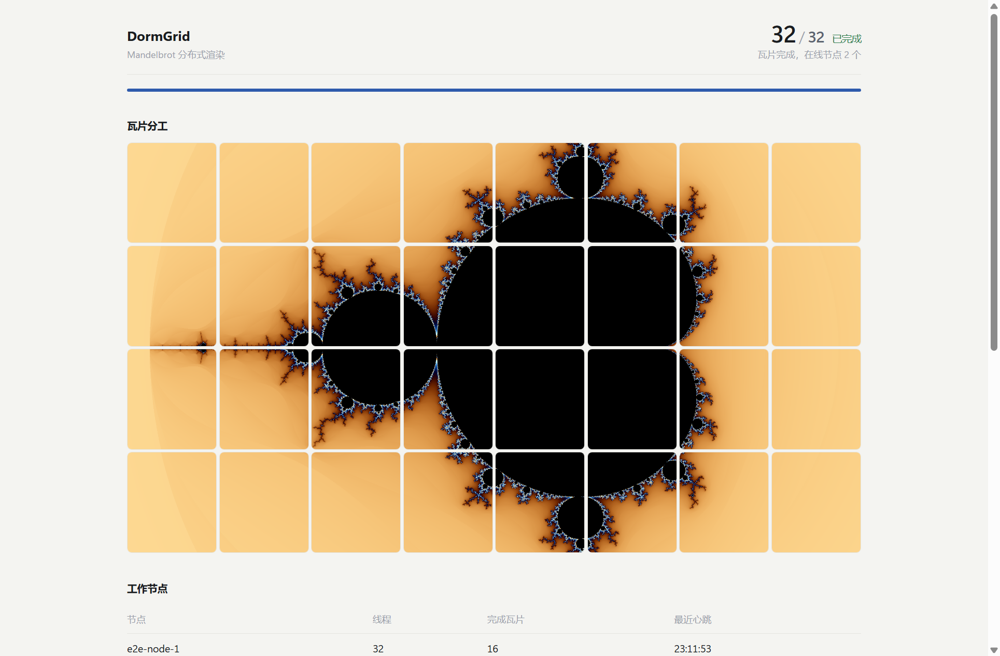
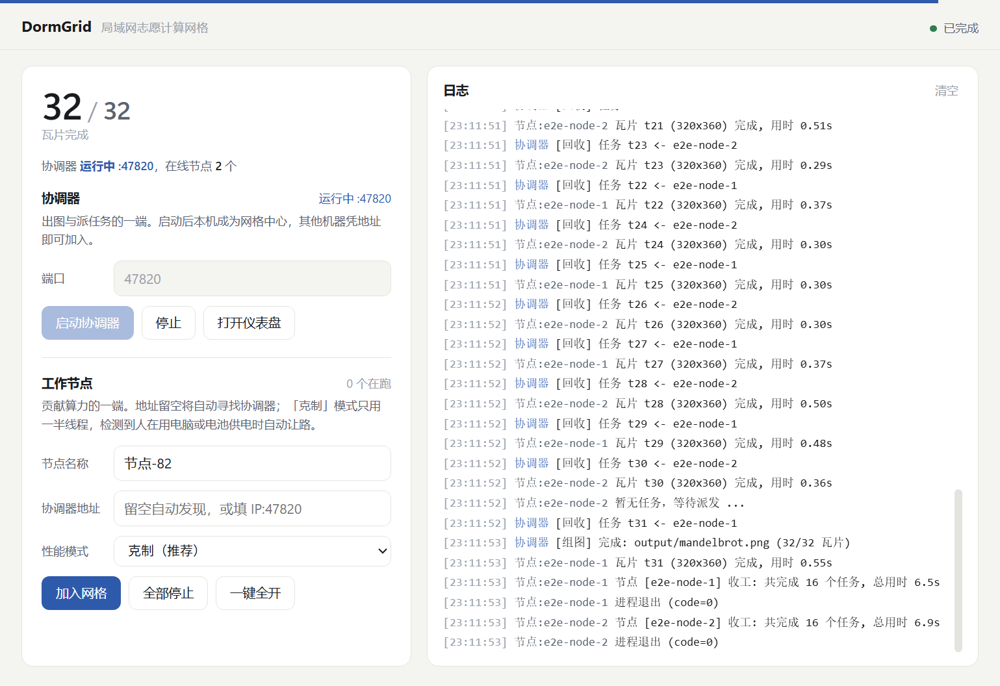
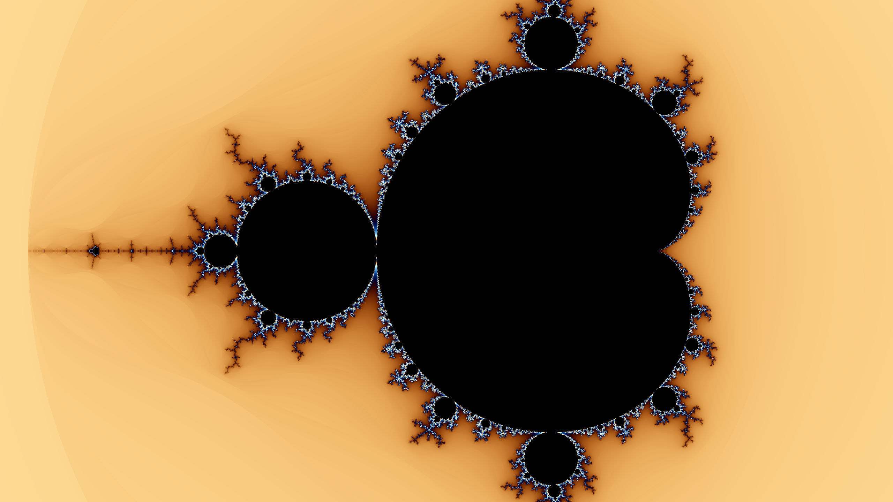

实拍截图
Web 仪表盘 —— 瓦片分工可视化,32/32 已完成
它解决什么
实验室那几台跑不动的机器,闲着就是闲着。想用它们算点东西,却要挨个装环境、手动分任务、手工收结果。
怎么做的
只要机器上有 Node,把文件夹拷过去就能入网。协调器切分任务分发给工作节点,节点自动领活交卷,结果自动汇总。三种形态:CLI、Web 仪表盘、Electron 桌面端。
关键数字
32/32
瓦片渲染完成
来自 e2e 实测结果
2
个在线节点
e2e 场景
3
种形态
CLI/仪表盘/桌面端
1
个文件即可入网
免装 Node 的 exe
功能
- 一条命令入网 —— 只要 Node ≥18,拷文件夹过去就能加入网格,零依赖。
- UDP 广播自动发现 —— 留空地址即自动发现同网段节点,不用手填 IP。
- 免装 Node 单文件 exe —— 工作节点可打包成单文件 exe,拷一个文件就能加入。
- Blender 农场 —— 桌面端里选 .blend + 填帧范围即可提交,无需命令行。
- 日志分级降噪 —— 普通事件弱化、里程碑高亮、错误红显,可一键只看重要。
- 内核侧降噪 —— 逐瓦片日志合并为四分位进度,秒级小任务不刷屏。
- 无人值守验证 —— npm run e2e 自动起协调器+2 节点全新渲染,截图并写结果后退出。

实拍截图
Electron 桌面端 —— 协调器与节点角色管理

实拍截图
Mandelbrot 分布式渲染成品 —— 两台节点协同出的图
工程细节
e2e 是无人值守的:自动起协调器 + 2 节点做全新渲染,截图并写 e2e-result.json 后退出。
首个负载是 Mandelbrot 分布式渲染,用于验证全链路 —— 32 块瓦片由 2 个节点各完成 16 块。